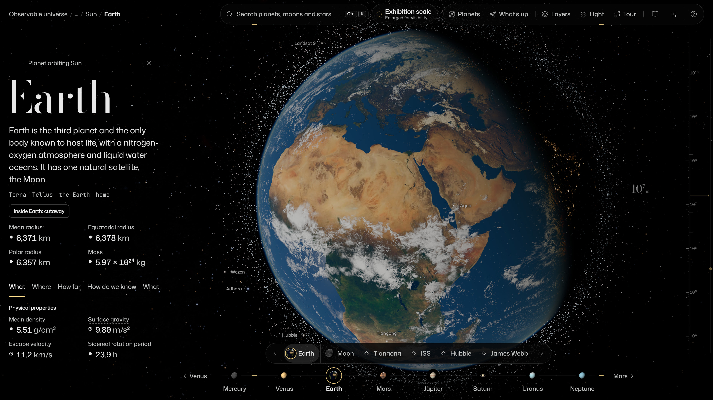
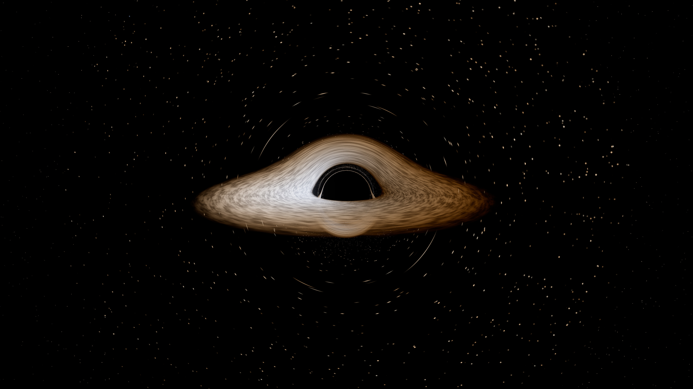
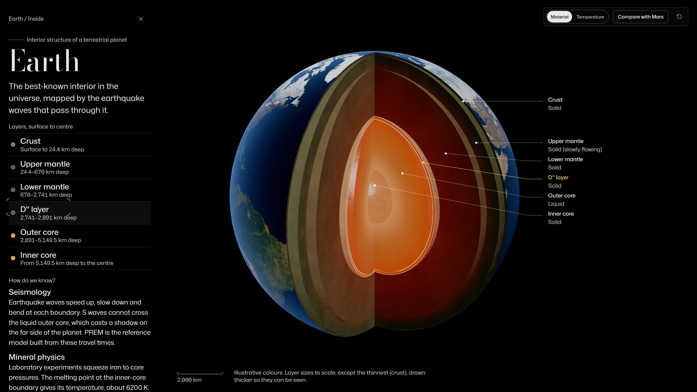
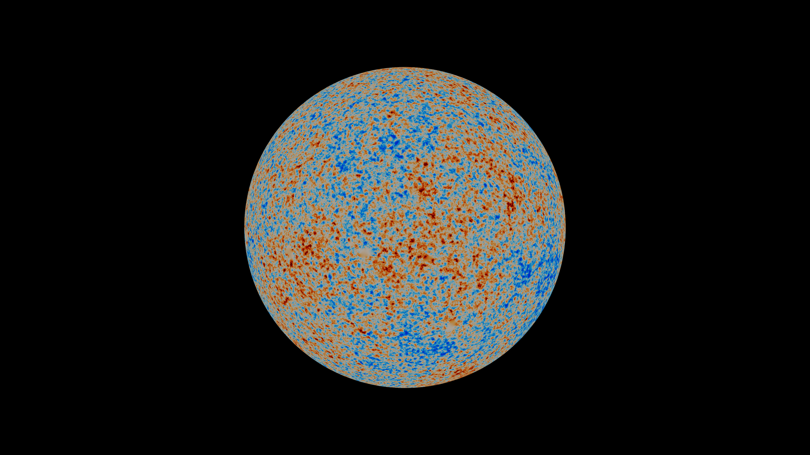

Nothing in Cosmos is made up where a measurement exists. Click any object and every value carries a mark that says where it came from, with its source.
Observed
Measured directly: a position, a mass, a photograph.
Derived
Computed from measurements by a stated model.
Reconstructed
Inferred from data, like the Milky Way seen from outside.
Illustrative
Drawn for clarity, like the Oort cloud or a black-hole disc.
Where nobody has measured, Cosmos says so: the unseen half of Triton, exoplanet surfaces, the Oort cloud. Nobody has photographed the Milky Way from outside, so its shape is a reconstruction from star maps.

The inspector. Earth's fact sheet, as a visitor sees it. A missing value reads "Unknown", never zero.
Real catalogues
Every dot is a real object
14
all-sky maps, radio to gamma rays
88
constellations, IAU lines and boundaries
13
black holes with measured masses
12
spacecraft on their real trajectories
76
versioned datasets, all offline
0
calls to outside servers at the stand
Shared openly by: NASA and JPL (Horizons, Small-Body Database, Exoplanet Archive), ESA (Gaia, Planck), CelesTrak, USGS Astrogeology, NOAA, the IAU, CDS (SIMBAD, VizieR), the 2MASS Redshift Survey and DESI, with maps from LRO, MESSENGER, Cassini, Juno, Dawn, New Horizons and the Voyagers. The Sources panel lists the version, licence and citation of every dataset.
How the hard parts work

Light bent by a black hole
For every pixel near Sagittarius A*, Cosmos traces the light ray backwards through curved spacetime. The dark shadow, about 5.2 times the event-horizon radius across, the thin photon ring and the far side of the disc lifted over the top all come out of the physics.
Light bendingGlowing disc

Inside planets, from quakes and gravity
Earthquake waves map Earth's layers: the inner core ends at 1,221.5 km, the outer core at 3,480 km. InSight heard marsquakes for four years; Apollo seismometers found the Moon's small iron core; Juno's gravity map shows Jupiter's core is fuzzy, not a hard ball.
SeismologyGravity, spin
Star colours from temperature
Each of the 109,389 stars has a colour index from its catalogue. Cosmos turns it into a temperature and draws the colour a glowing body has at that temperature. Brightness is recomputed for wherever you are, from the star's true luminosity and distance.
Colour indexTemperature, colour

The oldest light, mapped by Planck
The cosmic microwave background left 380,000 years after the Big Bang. Its spots differ by about 1 part in 100,000 from 2.7255 K. Cosmos draws ESA Planck's cleaned map on a sphere at the distance that light has come from: now about 45 billion light-years.